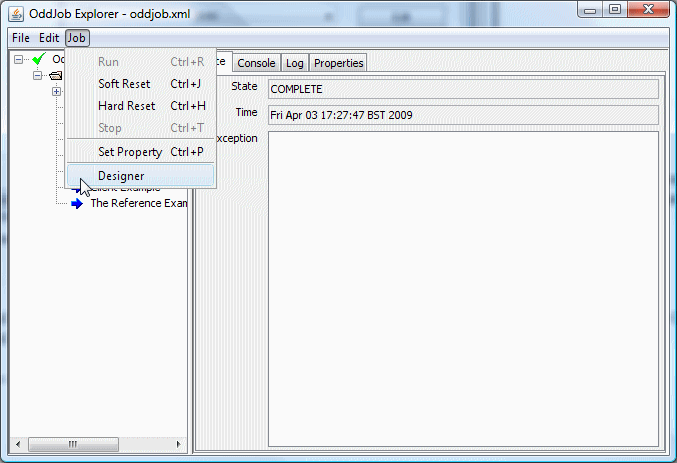
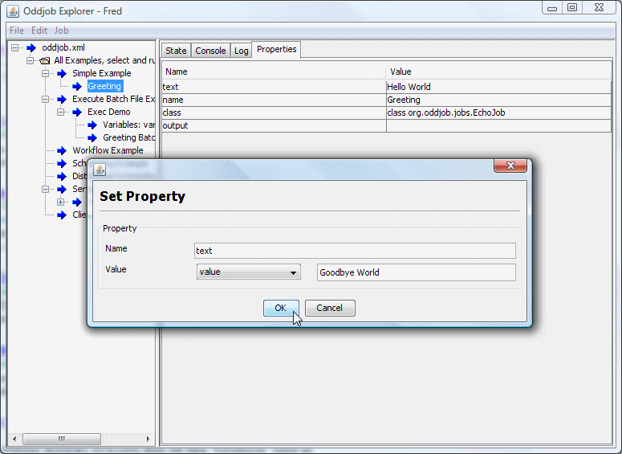
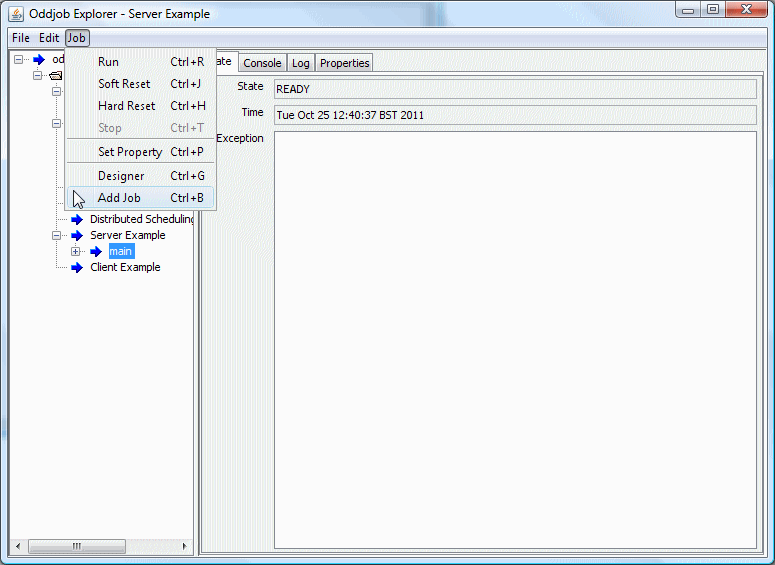

Your window on the Oddjob world. Before moving on let's have a quick walk through the Oddjob Explorer views and controls.
Displays the hierarchy of jobs.
Displays detail on a job selected in the tree view. It consists of four panels:
Displays the current state of a job, where available. The time is the time the job changed to that state and the exception is the full stack trace of the cause of the job being in an exception state.
Displays messages written to the console of the job being run. The console is shared at a process level so in any one jobs console view you will see messages from all jobs in the same process.
Displays log messages produced by the job, where available. Log messages are of different levels, DEBUG, INFO, WARNING, ERROR and FATAL. Each level message is displayed in a different colour.
Displays the properties of a job. Some of these properties are visible before a job is run because they are constant or default values, some will only be available when the job has run.
Creates a new Explorer window.
Creates a new Oddbjob configuration.
Starts Oddjob with the selected configuration file.
Closes the current view and destroys the internal Oddjob. Both Open and Exit perform these actions so Close won't be used much.
Note: you can not close the current view until all local running jobs have completed or have been stopped. If a job won't stop then you must kill the Oddjob Explorer process. This strategy ensures that no processes are left running that a user is unaware of.
Saves the Oddjob configuration of the currently selected jobs Oddjob, or the root Oddjob if no job is selected.
Saves the root Oddjob configuration in a different file.
Displays recent file history. Recent file history is stored in the directory used to launch Oddjob. When you change this directory you loose this history. Launching two Oddjob Explorers will confuse history and only that of the last closed will be persisted.
Performs a Close action and then exits Oddjob Explorer. The same as closing the main window.
Delete the current job after copying its configuration to the clip-board.
Copy the current job's configuration to the clip-board.
Paste configuration from the clip-board to create a child job of the current job.
Delete the current job.
The Job Menu applies to the job currently selected in the tree view. Here a nested Oddjob job has been selected.
For jobs that can load a configuration, such as Oddjob, this action will load the configuration without running it. If a job can't load a configuration (and most can't) this option won't appear.
For jobs that have loaded a configuration, such as Oddjob, this action will unload a configuration. Again this option will normally not be visible.
Runs a job immediately.
Performs a soft reset on the job.
Performs a hard reset on the job.
Stops the job.
Sets a property of a job.
Here's an example of changing the text property of the Echo job.
Note that unlike changing configuration this change will be lost when the job is destroyed. If the property is being set at runtime (see later) Oddjob will also overwrite anything set with this option.
Launches Oddjob Designer which allows the configuration of the currently selected job to be changed.
For a job that owns a configuration, such as Oddjob, this allows the internal configuration of that job to to be changed. This option is only enabled once the configuration has been loaded either with the Load and because the job has been run.
For a job that supports children this is quick way to add a child Job. It is often more convenient than using Designer to add the job.
Here is another view of the job menu, this time a Sequential job is selected so we can see the Add Job option.
